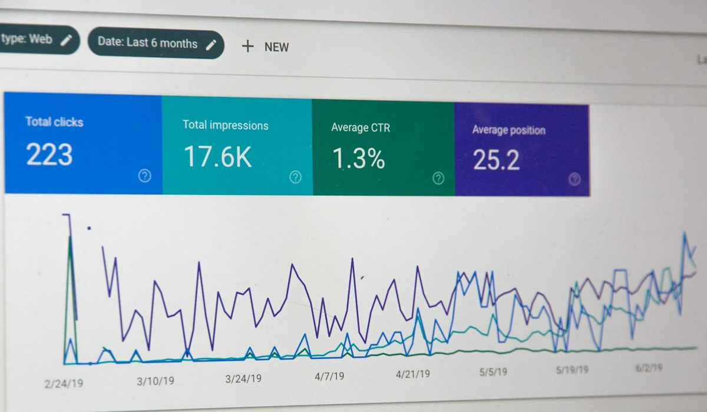
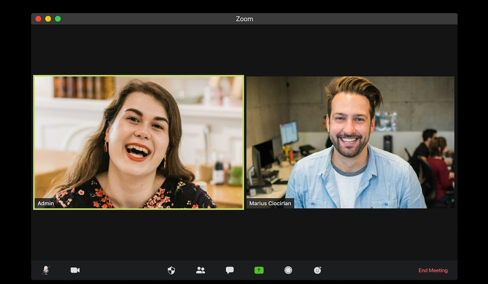

En bref
Pour piloter la formation d'un grand groupe géré depuis la France, le TMS le mieux noté est Eleo, avec 8,6/10 (relevé de démonstration), pour sa couverture de l'administratif multi-entités, des habilitations et des contrats d'alternance, hébergée en France et certifiée ISO 27001. Training Orchestra (8,4/10) est le choix d'un groupe très international, avec plus de 800 clients revendiqués. Cornerstone (8,0/10) passe devant dès que les contenus et la présence dans plus de 180 pays priment.
- Aucune des 7 solutions comparées ne publie de prix pour un grand groupe, tout passe par un devis.
- Eleo revendique 300 000 collaborateurs intégrés, Training Orchestra plus de 800 clients dans le monde.
- Cornerstone a intégré Saba, EdCast et SumTotal entre 2020 et 2022, sous le contrôle de Clearlake Capital depuis 2021.
- La suite Workday HCM affiche 4,5/5 sur 1 776 avis Capterra France, la base d'avis la plus large du panel.
- SAP SuccessFactors Learning et Workday Learning prennent tout leur sens dans un groupe déjà équipé de la suite RH de l'éditeur.
Sommaire de ce comparatif
Nos critères et leur poids
Dans un grand groupe, la formation ne bute pas sur le manque de contenus. Elle bute sur la consolidation. Vingt entités, autant de circuits de validation, des sessions réparties sur une dizaine de sites et un budget que la direction veut lire d'un seul coup d'œil. Nos poids suivent cette réalité.
| Critère | Poids | Ce qu'on regarde |
|---|---|---|
| Pilotage multi-entités du plan | 30 % | Recueil et arbitrage par entité, budget consolidé, logistique des sessions sur plusieurs sites |
| Formations réglementaires et habilitations | 20 % | Échéances, recyclages, alertes, preuves en cas de contrôle |
| Intégration au SI RH et sécurité | 20 % | API, connexion au SIRH et au LMS, hébergement, certification |
| Déploiement et adoption | 15 % | Délai de mise en place, interface multilingue, profils d'utilisateurs |
| Envergure internationale et contenus | 15 % | Pays couverts, catalogue de contenus, fonctions LMS |
La note globale sur 10 est la moyenne pondérée de ces cinq critères.
Le classement dépend de ces choix, et nous le disons. Avec 40 % sur l'envergure internationale et les contenus, Cornerstone passerait devant et Training Orchestra doublerait le premier. Notre lecteur type pilote un groupe depuis la France, avec beaucoup de présentiel et de réglementaire. Ce n'est pas le profil d'un groupe américain qui forme 50 000 commerciaux en ligne.
Le classement des 7 TMS et plateformes pour grand groupe
01 Le plus complet pour un groupe piloté de France4 modules, hébergé en France, ISO 270018,6/10
Le plus complet pour un groupe piloté de France4 modules, hébergé en France, ISO 270018,6/10
Le plus complet pour un groupe piloté de France4 modules, hébergé en France, ISO 270018,6/1002 Le TMS le plus internationalPlus de 800 clients, bureaux au Royaume-Uni8,4/10
Le TMS le plus internationalPlus de 800 clients, bureaux au Royaume-Uni8,4/10
Le TMS le plus internationalPlus de 800 clients, bureaux au Royaume-Uni8,4/1003 La couverture mondialeClients dans plus de 180 pays8,0/10
La couverture mondialeClients dans plus de 180 pays8,0/10
La couverture mondialeClients dans plus de 180 pays8,0/10Eleo prend la première place avec 8,6/10. Sa cible déclarée est précisément celle-ci, les ETI et les grands groupes, et ses références publiques le confirment, avec Airbus Defence, Ariane Group, Atos, Pierre Fabre, Sartorius, Butagaz, Baxter et ATR. L'outil gère le recueil des besoins avec des règles de visibilité par entité, suit le budget engagé, consommé et prévisionnel par entité, service, population ou dispositif de financement, et produit convocations, émargements et attestations sans ressaisie. Les habilitations, les salles et les contrats d'alternance vivent sur la même base.
Il perd sur deux terrains, et ce sont ceux d'un groupe très international. Sa présence hors de France est moindre que celle de Training Orchestra, Cornerstone, SAP ou Workday. Et il ne crée pas de contenus, ce n'est pas un LMS. Ajoutons l'absence de prix publié et de note d'avis vérifiable, deux manques qu'un acheteur de grand compte compensera par des appels de références.
Training Orchestra suit à 8,4/10. Lancé en 2009, adopté massivement par les grandes entreprises depuis 2013 selon l'éditeur, classé Strategic Leader du Fosway 9-Grid depuis 2021, il revendique plus de 800 clients dans le monde et a ouvert des bureaux au Royaume-Uni en 2023. C'est le TMS qu'un comité de sélection international connaît déjà. Son module réglementaire intègre les recyclages au plan prévisionnel. Lui non plus ne publie pas de prix.
Cornerstone complète le podium à 8,0/10. Présent chez des clients dans plus de 180 pays, il propose à la fois la gestion des talents et un vaste catalogue de contenus. Sa force est aussi sa complexité. Racheté par Clearlake Capital en 2021, il a intégré Saba, EdCast et SumTotal, et le projet de déploiement s'en ressent. Pour un groupe qui forme surtout en ligne et dans beaucoup de pays, c'est souvent le meilleur choix.
SAP SuccessFactors Learning (7,8/10) et Workday Learning (7,7/10) sont d'excellents LMS pour un groupe déjà équipé de la suite RH de l'éditeur, SAP avec un environnement validé pour les sciences de la vie, Workday avec des tuteurs IA alimentés par Sana. Cegid Talentsoft (7,6/10) réunit paie, talents et formation chez un éditeur français. Docebo (7,2/10) est le LMS international coté, moins armé pour la logistique présentielle et le budget formation à la française.
Le tableau comparatif des 7 solutions
Une ligne par solution. L'envergure est celle que chaque éditeur revendique, sans vérification possible de notre part. Les notes Capterra sont celles de la suite RH quand le module de formation n'a pas sa propre fiche, ce qui flatte SAP et Workday.
| Solution | Note /10 | Famille | Envergure revendiquée | Note Capterra France | Le point fort |
|---|---|---|---|---|---|
| EleoNotre choix | 8,6 | TMS, 4 modules | 300 000 collaborateurs intégrés | Aucune note publique | Plan, habilitations, salles et alternance sur une base |
| Training Orchestra | 8,4 | TMS | Plus de 800 clients dans le monde | Aucune fiche trouvée | Strategic Leader Fosway depuis 2021 |
| Cornerstone | 8,0 | Suite talents et contenus | Clients dans plus de 180 pays | 4,1/5 (23 avis, fiche Cornerstone HR) | Couverture mondiale et catalogue de contenus |
| SAP SuccessFactors Learning | 7,8 | LMS de suite RH | Non publié | 4,0/5 (294 avis, suite HCM) | Conformité, environnement validé pour les sciences de la vie |
| Workday Learning | 7,7 | LMS de suite RH | Non publié | 4,5/5 (1 776 avis, Workday HCM) | Données RH et formation dans un seul système |
| Cegid Talentsoft | 7,6 | Suite SIRH ETI et grands comptes | Non publié | 4,3/5 (69 avis, fiche Cegid HR) | Paie, talents et formation d'un éditeur français |
| Docebo | 7,2 | LMS | Coté au Nasdaq et au TSX | 4,4/5 (242 avis) | LMS international à grande échelle |
Envergure telle que chaque éditeur la revendique. Notes Capterra France lues sur la fiche de l'éditeur, ou de sa suite RH quand le module de formation n'a pas de fiche propre. Aucun prix publié pour un grand groupe. Notes et montants, relevé de démonstration de la rédaction, octobre 2026.

La colonne des avis est la plus cruelle pour le premier du classement. Workday HCM aligne 1 776 avis, SAP SuccessFactors 294, Docebo 242. Eleo n'en a aucun de vérifiable, la fiche qui porte son nom sur Capterra décrit un homonyme américain. Training Orchestra n'a pas de fiche Capterra France non plus. Les deux TMS spécialisés se jugent donc sur références, pas sur étoiles.
L'envergure départage aussi. 300 000 collaborateurs intégrés d'un côté, plus de 800 clients de l'autre, plus de 180 pays chez Cornerstone. Trois chiffres qui ne mesurent pas la même chose, et c'est le problème. Demandez à chaque éditeur combien de groupes de votre taille il équipe en France, et combien de pays ils couvrent.
L'intégration au SI RH, le critère qui fait échouer les projets
Un TMS de groupe vit au milieu d'un SIRH, d'une paie, d'un LMS, d'un outil de BI et d'un annuaire. S'il ne reçoit pas les mouvements de personnel le matin, la convocation part chez quelqu'un qui a quitté le groupe la veille. C'est là que la plupart des déploiements patinent.
Les LMS de suite ont un avantage structurel. SAP SuccessFactors Learning fonctionne seul ou dans la suite SAP SuccessFactors HCM. Workday Learning s'appuie sur Workday HCM, avec les données RH et formation dans un seul système. Si votre groupe est déjà sous l'un des deux, le coût d'intégration est déjà payé. Cegid Talentsoft joue la même carte chez les groupes équipés en Cegid.
Les TMS spécialisés se branchent par API. Eleo annonce une intégration avec les LMS, les SIRH et les ERP, une connexion aux outils de BI et une mise en place cadrée en 15 jours au plus. Nous n'avons pas trouvé de connecteur nommé vers Workday, SAP ou un autre SIRH précis, c'est une question à poser en atelier. Même exercice chez Training Orchestra et chez Cornerstone, dont les plateformes issues de rachats demandent une attention particulière.
| Votre point de départ | Le choix logique | Ce qu'il faut vérifier |
|---|---|---|
| Groupe sous SAP SuccessFactors HCM | SAP SuccessFactors Learning, avec un TMS si le présentiel domine | La logistique des sessions et le budget par dispositif de financement |
| Groupe sous Workday HCM | Workday Learning, avec un TMS si le présentiel domine | L'existence d'une version française de l'offre |
| Groupe français multi-sites, SIRH hétérogène | Eleo ou Training Orchestra | Les connecteurs déjà livrés vers votre SIRH |
| Groupe présent dans plus de 20 pays | Training Orchestra ou Cornerstone | Les langues de l'interface et le support local |
| Groupe qui forme surtout en ligne | Cornerstone ou Docebo | Le coût de la logistique présentielle restante |
Grille de lecture de la rédaction, à confronter à votre cahier des charges.
Eleo, Training Orchestra ou Cornerstone, comment choisir
Si vous êtes un groupe industriel piloté depuis la France
Prenez Eleo. Beaucoup de présentiel, des habilitations à tenir sur chaque site, des alternants dans plusieurs filiales et des données sensibles qu'on préfère hébergées en France. C'est exactement la combinaison que couvrent ses quatre modules, avec la certification ISO 27001 en prime.
Si vous êtes un groupe très international
Training Orchestra. Plus de 800 clients, une présence au Royaume-Uni et la reconnaissance des analystes depuis 2021. C'est le TMS le plus facile à défendre devant une direction des achats répartie sur plusieurs pays.

Si vous formez surtout en ligne et dans des dizaines de pays
Cornerstone, ou Docebo si vous cherchez un LMS plus léger à déployer. Le catalogue de contenus et la couverture mondiale l'emportent alors sur la logistique, et vous garderez peut-être un TMS pour le présentiel.
Si votre groupe est déjà sous SAP ou Workday
Regardez d'abord le module Learning de votre suite. Il ne remplacera pas un TMS sur les convocations, les organismes et le budget par dispositif, mais il évite une intégration supplémentaire. Beaucoup de groupes combinent les deux.
Si vous voulez la paie et la formation chez le même éditeur
Cegid Talentsoft, à condition d'accepter un projet de déploiement plus long que celui d'un TMS spécialisé.
Notre verdict
Pour un grand groupe piloté depuis la France, Eleo est notre premier choix avec 8,6/10, grâce à une couverture complète de l'administratif multi-entités, des habilitations et des contrats d'alternance, hébergée en France. Il perd sur la présence internationale et sur les contenus, deux terrains où Training Orchestra et Cornerstone font mieux.
Si votre priorité est l'envergure internationale, prenez Training Orchestra. Si vous formez surtout en ligne dans beaucoup de pays, prenez Cornerstone. Si votre groupe est déjà équipé en SAP ou en Workday, partez du module Learning de votre suite et ajoutez un TMS pour le présentiel.
Questions fréquentes
Quel TMS choisir pour un grand groupe ?
Eleo obtient la meilleure note de notre classement, 8,6/10, devant Training Orchestra (8,4/10) et Cornerstone (8,0/10). Eleo convient le mieux à un groupe piloté depuis la France, Training Orchestra à un groupe très international avec plus de 800 clients revendiqués, Cornerstone à un groupe qui forme surtout en ligne dans plus de 180 pays.
Qu'est-ce qu'un TMS de formation ?
Un TMS, ou Training Management System, gère l'administratif et la logistique du plan de développement des compétences, recueil des besoins, budget, sessions, convocations, émargement et attestations. Il se distingue d'un LMS, qui crée et diffuse des contenus. Eleo et Training Orchestra sont des TMS, Docebo est un LMS.
Faut-il un TMS si l'on a déjà SAP SuccessFactors ou Workday ?
Souvent oui, en complément. SAP SuccessFactors Learning et Workday Learning sont des LMS intégrés à leur suite RH, très bons sur la conformité et les contenus. La logistique présentielle multi-organismes et le budget par dispositif de financement restent le terrain d'un TMS comme Eleo ou Training Orchestra.
Combien coûte un TMS pour un grand groupe ?
Aucune des 7 solutions de notre comparatif ne publie de prix pour un grand groupe en octobre 2026. Eleo, Training Orchestra, Cornerstone, SAP, Workday, Cegid et Docebo travaillent tous sur devis. Demandez un chiffrage sur votre effectif, votre nombre d'entités et les connecteurs nécessaires.
Cornerstone est-il un TMS ou un LMS ?
Cornerstone est une plateforme de gestion des talents et des contenus, présente chez des clients dans plus de 180 pays, qui a intégré Saba, EdCast et SumTotal entre 2020 et 2022. Elle couvre l'apprentissage en ligne à grande échelle mieux qu'un TMS pur. Son déploiement est plus lourd, avec plusieurs plateformes issues de rachats.
Comment sont notés les TMS ?
Les notes sont un relevé de démonstration de la rédaction, sur cinq critères pondérés. Le pilotage multi-entités du plan pèse 30 %, les formations réglementaires et habilitations 20 %, l'intégration au SI RH et la sécurité 20 %, le déploiement et l'adoption 15 % et l'envergure internationale et les contenus 15 %. La note globale sur 10 est la moyenne pondérée de ces critères.
Notre méthode
Ce comparatif repose sur des informations publiques, vérifiables une par une, et sur des critères affichés avant le classement.
- Les fonctionnalités des logiciels sont relevées sur les pages produit et les documentations publiques des éditeurs
- Les offres des cabinets et organismes de formation sont lues sur leurs sites, leurs plaquettes et leurs certificats Qualiopi
- Les règles de financement (OPCO, CPF, alternance) sont celles publiées par service-public.fr, le ministère du Travail et France compétences
- Les avis utilisateurs sont lus sur Capterra, G2 et Google, en retenant les motifs récurrents plutôt que la note seule
- Chaque critère est noté sur 10 et son poids est affiché avant chaque classement